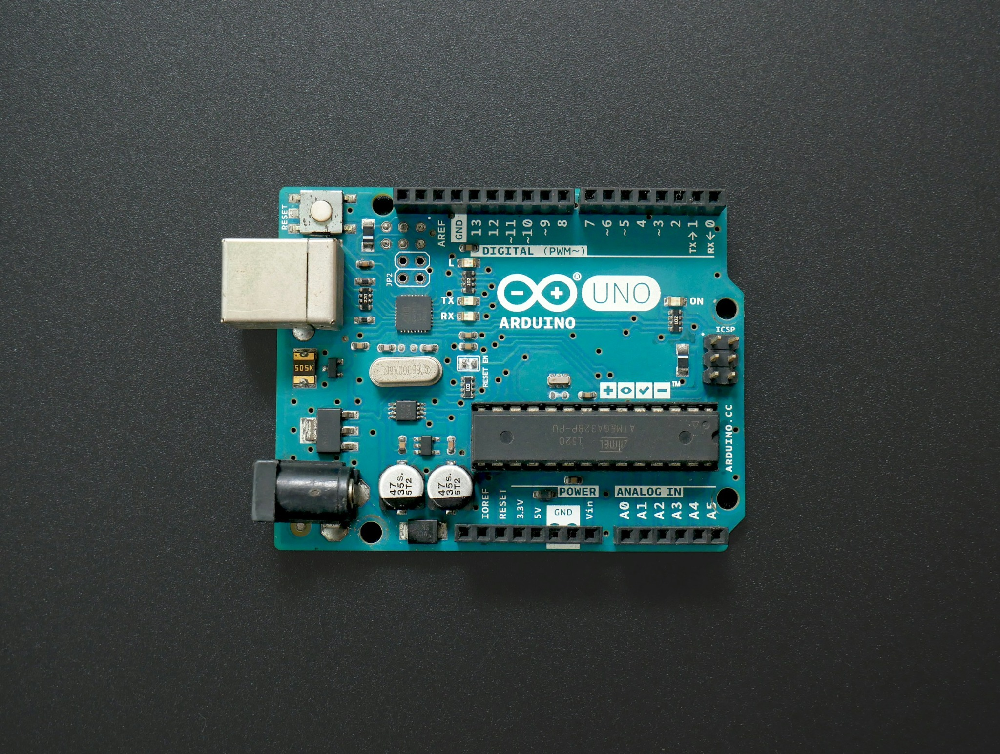

Transforme dados de fluxo em vantagem competitiva
para seu negócio.
Monitore o comportamento do seu consumidor nas prateleiras
com tecnologia acessível.
Como o InfoConnect funciona?

Sensores de proximidade instalados na gôndola captam quando
um cliente se aproxima ou interage com o produto — sem câmeras
e sem nenhum traço identificável da pessoa. Uma
placa com microcontrolador processa esses dados,
transformando o movimento em informação: quantas pessoas pararam,
por quanto tempo e se houve contato com o item. O resultado chega
a um painel simples, com o comportamento agregado por produto —
sem biometria, sem reconhecimento facial, dentro da LGPD.
Nossos serviços
Três frentes de monitoramento integradas na mesma solução para
entender o comportamento do consumidor no ponto de venda.